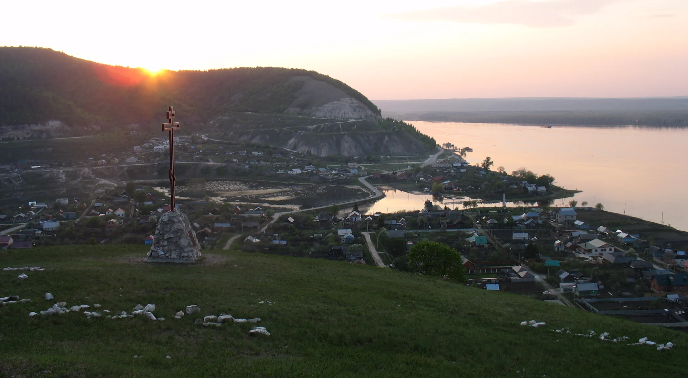

Национальный парк · Самарская область
Там, где Волга
поворачивает
Жигулёвские горы, сосновые склоны и три тропы, с которых видно всю излучину. Час от Тольятти, два — от Самары.
3 маршрута · 2 аудиотрека · 1 видео
Листайте
Маршруты
Три тропы —
от часа до полудня
Все маршруты промаркированы, специальная подготовка не нужна. Обувь — по погоде.
Галерея
Взгляд со стороны
Нажмите на фотографию, чтобы рассмотреть. Стрелки и Esc работают.
Аудиогид
Послушать парк
Два коротких трека для наушников: у воды и на подъёме. Без автозапуска — включайте, когда удобно.
У Волги
0:00
шум воды · 0:45
На тропе
0:00
ветер в соснах · 0:38